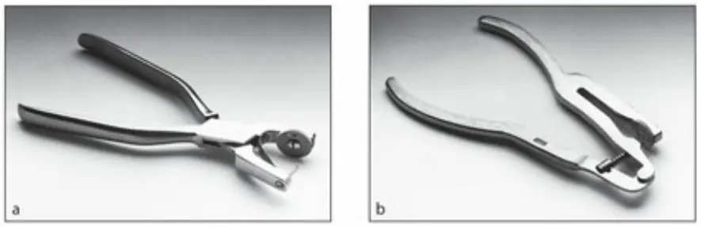
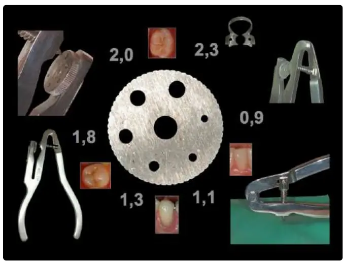

نسخه استخراجشده؛ ترجمه یا تأیید علمی انجام نشده است. وضعیت: captured
دستیار تازهکار برای ترمیم کلاس II پرمولر دوم بالا همهی سوراخها را با یک اندازهی متوسط زده است. هنگام گذاشتن رابردم، ورق دور مولرِ کلمپشده پاره شد و دور ثنایا بزاق نشت کرد. کجای کار اشتباه بود؟

پانچ یک صفحهی گردان دارد با پنج یا شش سوراخ به اندازههای مختلف، و یک پیستون نوکتیز مخروطی. پیستون ورق را روی لبهی سوراخ صفحه میفشارد و یک دایرهی تمیز میبُرد. لبهی گرد و صاف در برابر پارگی مقاوم است.
سوراخ همیشه کوچکتر از دندان است و کشسانی ورق آن را دور گردن دندان سیل میکند. پس اندازهی هر سوراخ باید با اندازهی گردن همان دندان جور باشد؛ یک اندازه برای همهی دندانها جواب نمیدهد.
قاعده: بزرگترین سوراخ برای دندان کلمپشده، چون ورق باید از روی کمان و فکهای کلمپ هم بیپارگی رد شود. بقیه به ترتیب کوچکتر:

اندازه را با قطر واقعی دندانها که در معاینه دیدهای تنظیم کن. ورق نازکتر کشسانتر است و سوراخ کوچکتری میخواهد. نوع و ضخامت ورق و سلیقهی تو اندازهها را کمی جابهجا میکند، ولی همیشه از چند اندازه استفاده کن.
نکتهی طلایی: در ایزولاسیون تکدندان درمان ریشه، بزرگترین سوراخ را بزن، حتی برای ثنایای پایین. سوراخ کوچکتر ورق را زیر کشش زیاد میبرد و خطر پارگی بالا میرود. اگر درز کوچکی دور دندان ماند، آن را با لیکوئید دم میبندی.